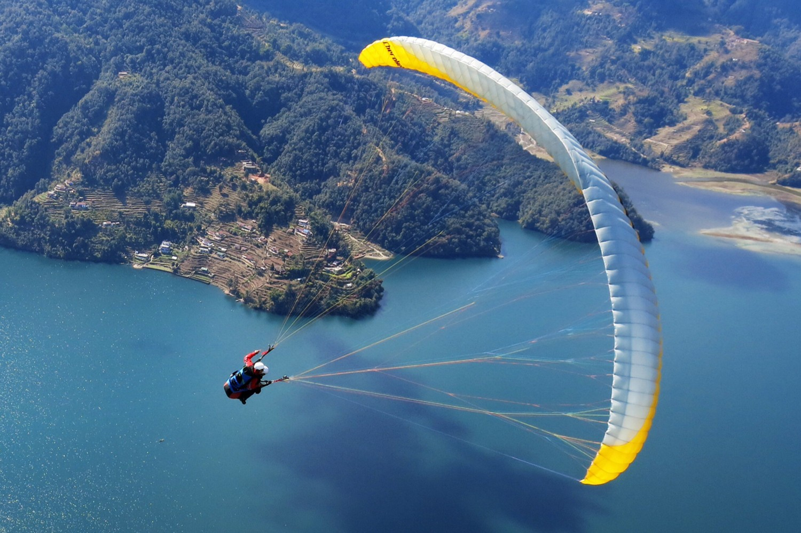
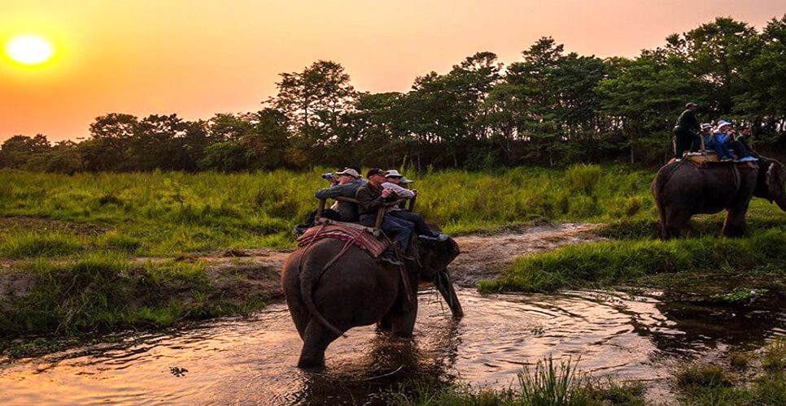

TOURS AND EXPEDITION
From the world's second-highest bungee to Himalayan honey hunting. Ignite your spirit with the ultimate adrenaline experiences in the land of the Himalayas.


Choose from our curated selection of high-adrenaline packages, from single-day thrills to multi-day expeditions across Nepal's most dramatic landscapes.
View Adventure PackagesNepal, home to the world's highest mountains, offers more than serene trekking trails. It is a premier global destination for heart-pounding adventure sports. Here, ancient cultures meet the raw power of nature, creating a playground for adrenaline seekers. Whether you're leaping from towering suspension bridges, navigating wild Himalayan rivers, or exploring the high-altitude desert of Mustang, Nepal delivers unparalleled excitement amidst breathtaking scenery.
Plunge 228 meters from one of the world's highest suspension bridges over the Kaligandaki River gorge. The Kushma Bungee is not just a jump; it's a 7-second freefall offering a breathtaking, once-in-a-lifetime perspective of Nepal's deepest gorge.
Navigate the thrilling rapids of the Trishuli, Bhote Koshi, and Seti rivers. From family-friendly Class II rapids to the heart-pounding Class V torrents of the Sun Koshi, Nepal's rivers offer world-class rafting and kayaking experiences for all skill levels.
Soar like a bird over the stunning Pokhara Valley with the Annapurna range as your backdrop. For an even faster thrill, the ZipFlyer Nepal is one of the world's steepest, longest, and fastest ziplines, reaching speeds over 120 km/h.
The post-monsoon months from October to November offer clear skies, stable weather, and optimal conditions for almost all adventure activities. The pre-monsoon period from March to May is also excellent, with warmer temperatures and blooming rhododendrons. Winter offers clear skies for flights and jeep tours, while monsoon season (June-August) is ideal for challenging white-water rafting.
While peak physical fitness isn't mandatory for all activities, a general level of health is important. Bungee, paragliding, and ziplining have minimal fitness requirements but carry age, weight, and health restrictions (e.g., no heart conditions, pregnancy, back problems). Activities like the Upper Mustang Jeep Tour require comfort with long drives on rough terrain. Always disclose medical conditions to operators.
Safety is paramount. Always choose operators certified by the Nepal Tourism Board and relevant international bodies (like APR for paragliding). Check equipment inspection logs. Reputable companies provide comprehensive safety briefings, professional guides, and high-quality, internationally certified gear. Ensure your travel insurance explicitly covers high-risk adventure activities.
This is an adventure in exploration. Traverse the rugged, moon-like landscape of the former Buddhist kingdom of Mustang, often called "the last forbidden kingdom." The journey involves long drives on challenging roads at high altitudes (above 3,500m), visiting ancient cave monasteries, medieval castles (dzongs), and interacting with the preserved Tibetan culture. A special restricted area permit is required.
Participate in an ancient tradition dating back thousands of years. Local Gurung hunters scale sheer Himalayan cliffs using handmade rope ladders to harvest honey from the world's largest honeybees (Apis laboriosa). This cultural adventure offers a unique blend of thrill and tradition. Shorter tours are observational, while longer packages offer more immersive experiences. It's seasonal, typically occurring twice a year (spring and autumn).
Pack for variable mountain weather: layered clothing, a warm jacket, sturdy shoes, sunscreen, and sunglasses. For specific activities: secure footwear for bungee/rafting, gloves for ziplining, and motion sickness tablets for windy jeep roads. Always carry a copy of your passport, insurance documents, and necessary permits. A headlamp, power bank, and basic first-aid kit are recommended for multi-day tours.